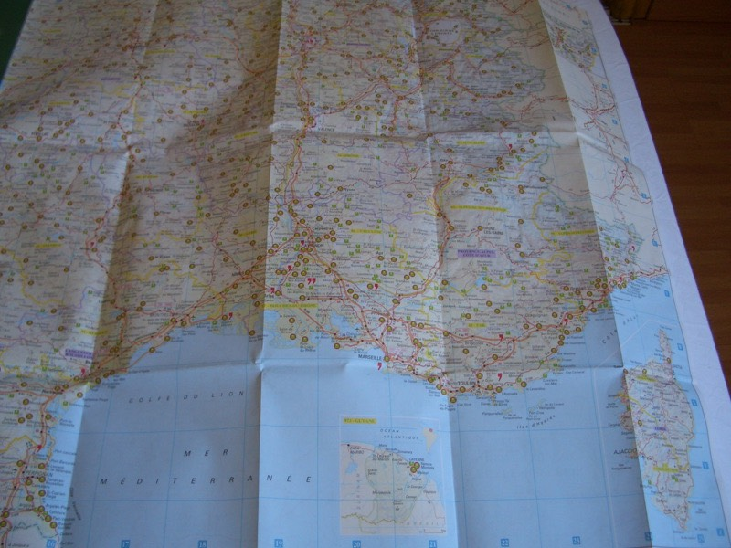
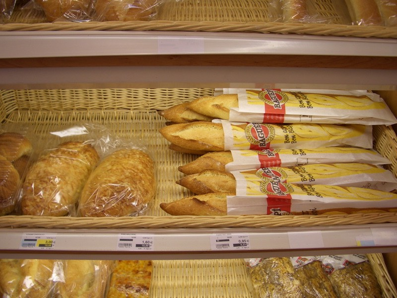
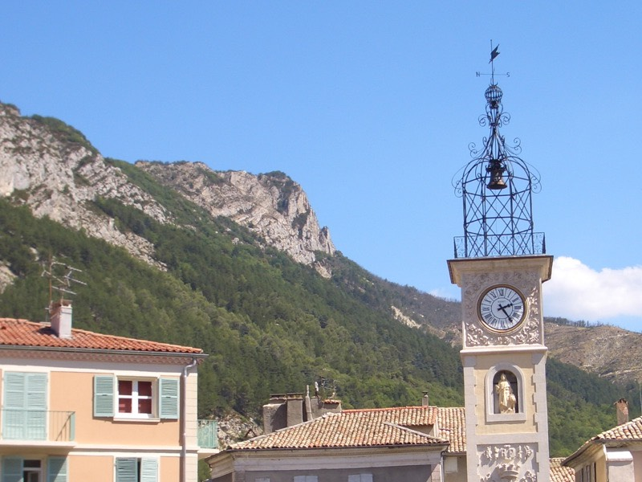
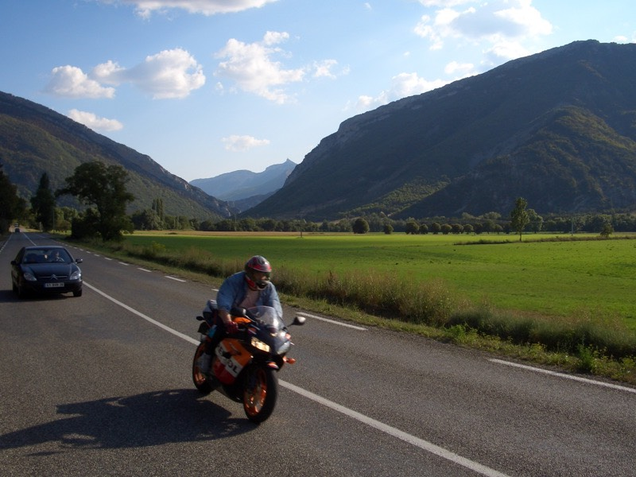

為了不讓自己變成豬，早上很守信用的在七點..........................五十九分起床。
昨天只說幾點起床，又沒說幾分，太嚴格的話，生活就缺乏彈性。
洗好的衣服，掛在窗口晒了一夜之後，確實是乾的，但摸起來冰冷冷的呀，就像從冰箱拿出來似的。
穿冰的衣服（當然包括內褲跟襪子）在身上，真是一個『爽』字 >"< 全身雞皮疙瘩。
山裡入夜之後氣溫降的很低，要是露宿的話，一定會吃足苦頭，好加在有找到旅館。
房間有一張地圖，除了比例尺比身上帶的要詳細之外，主要特色是有標記旅館的地點。

東西收拾好，下樓結帳，很守信用的在八點................五十七分離開旅館。
去鎮裡的超級市場買東西吃，先去肉食部看有沒有什麼好吃的東西。
買了兩片以為是炸肉餅，結果是炸魚肉（MERLAN PANE）的食物，相當好吃∼
唯一可惜的是它也是冰的，沒法加熱後吃。2.3X2=4.6歐元。
不可少的是一大條的粗壯的法國麵包，0.95歐元，回去昨天夜裡上網的地方吃。

像是修車廠的地方，白天有人在工作了，躲在門口旁邊悄悄上網，還好沒有人跑出來問我在幹嘛？

早上十點，延續昨天沒有爬完的山路，往迪紐方向騎，N202騎完，N85出現了，昨天應該是走這條才對的呀...
今天一直有個閃山的念頭。太固執往山裡猛鑽的話，只怕就卡在裡面動彈不得了。
想爬山多的是機會，從現在開始一直到史特拉斯堡，全都是爬山的路線，還是保留一點體力比較妥當。
雖然儘可能的避免入山，但依舊是處於阿爾卑斯山脈之中。
中午十二點，到達迪紐，閃山行動開始，往西邊稍微閃一點點，再往北騎，這樣會好走許多。
轉蛋機器，1~2歐元，沒比台灣貴多少。
路邊出現水果攤，靠過去盯著水果直瞧，像口水要滴下來那樣，老闆就會請你試吃。
之後買了一公斤類似李子的水果，表皮有點酸酸的，但果肉很甜，既可以解嘴巴無聊，又能止渴，2歐元。
講到解嘴巴無聊，這四十幾天都是在吃糖果，除了isis送的一包人參糖已經吃完了之外，都是吃旅館附贈的糖果。
只要旅館有糖果可以讓房客拿，一定是一把又一把的裝滿整個袋子（半夜下去偷裝）。
昨天睡覺的旅館，早上起床才發現櫃台旁邊有糖果可以拿，還是先禮貌的問一下：
『我可以帶點糖果路上吃嗎？』
『那當然∼』
那口氣像是儘管拿的意思。
打開包包準備要裝滿它的時候，老闆覺得不太對，自己抓了一小把放在我手裡。
『就.....就這樣？』
『就這樣。沒了。』
他盯著我看，我也沒辦法，只好省著點吃，幸好昨天喝咖啡的時候，拿了大概十包的砂糖，無聊就吃這個吧。
鵝卵石蓋的房子
下午兩點十五分，到一個忘記名字的小鎮，自己帶來的眼藥水，對於滋潤眼睛的效果還不錯。
雖然戴著太陽眼鏡，但是眼睛依舊承受著風沙，一整天下來，往往都是眼睛乾澀遍佈血絲。
只可惜眼藥水雖然很省著用，只用了不到半瓶，就沒有了，有一次忘記把蓋子蓋緊，結果全部都漏光光。
所以到藥局去希望能買點類似的東西，不會法文點餐都很困難了，何況是買藥水。
進到藥局裡，指著自己的眼睛，說有點乾澀，想買可以讓它舒服點的東西，但是眼睛沒有生病，只是想買滋潤的藥水。
很漂亮的女店員，叫我拿下太陽眼鏡，她盯著我的眼睛（羞）瞧了好一會之後，找了這個給我。
大概是生理食鹽水之類的，裡面有30支小小瓶的藥水，一天可以消耗2瓶，3.8歐元。
是不是真的要爬得這麼高呀？

鬼斧神工的大自然
今天有點熱，藥局的溫度計，攝氏33度，跟台灣比起來涼快不到哪裡去呀∼
躲樹陰下休息，呼∼∼∼∼喘口氣，騎車真的累，確確實實的，很累。
紫色的蘋果跟綠色的蘋果長在同一棵樹上
今天的風景很美，雖然拍照的技術有待進步，但還是拍了幾張可以當桌面的照片，喜歡的話就抓回去吧。
桌布1：湖∼
桌布2：綠色版的小草方塊

桌布3：鐵路，的確是有火車在跑的，都是一節車廂的小火車
不認識的某個發明家之類的人物
閃山算是小小成功了，走小路D948->D942又接回N75，閃過了加普（GAP）這個地方，往北前進。
蓋給蜜蜂住的房子？
下午五點，里程表即將突破150公里，今天出發的早，雖然都在爬山，但還騎的蠻遠的。
到超市買一瓶促銷中的賭場牌（CASINO）可樂，1.04歐元。
本來想住在這個小鎮裡，剩下約一百多公里的路明天再騎，結果旅館比想像中貴，都要四十幾將近五十歐元。
多灌兩口可樂，不是荷包失血，就是再多累一段路，繼續騎吧∼
要是騎機車旅行就會輕鬆許多呀，有點羨慕那高速移動的便利姓。

平交道，跟等一下要爬過去的山。
名副其實的『黑馬』。
如同想到蔚藍海岸就會聯想到游泳一樣。
提到阿爾卑斯山的第一印象，就是滑雪。
但現在是夏天，沒有雪可以滑，所以山裡冷清許多，本以為旅館會比較好找，結果正好相反。
跟客滿一樣令人頭痛的，就是歇業，夏天阿爾卑斯山區的旅館都關門不營業，冬天才開張，傷腦筋。
五點離開小鎮，往前爬有個叫HAUTE的山峰，在到峰頂之前，有三個小鎮能讓我找過夜的地方。
第一個小鎮，兩間民宿客滿，兩間旅館嫌太貴，放棄。
晚上六點半，快餐車隨便買一個熱狗吃，要有露宿山頭的心理準備，先隨便吃點什麼墊個肚子比較保險。
有點像AV女優的店員問我熱狗要加番茄醬還是OOO？
OOO聽不懂是什麼，總之不要加番茄醬就好了，所以加了不知名的OOO。
咬了第一口熱狗，這種嗆鼻的味道。相當明顯的，這是跟我打對台的食物，黃色芥末醬。
配著賭場牌可樂，還是吃進了肚子裡，還好不是綠色的芥末醬，不然真的吃不下去。
第二個小鎮，三間旅館，感覺成功過夜的機會比較大？結果兩間歇業，一間客滿。
現在已經不是嫌房價貴不貴的問題了，有沒有地方住才是重點呀 @@" 繼續往前騎，剩下最後一個指望。
太陡峭了，連跟草都長不起來。
第三個小鎮，入口的第一間旅館，歇業中，再往前騎100公尺，居然就離開這個小鎮了？？？
會不會太小了一點？整個小鎮就一棟建築物，而且還是歇業的旅館？別開玩笑了。
繞回頭去，往大路旁的小路走，爬小路往看得見房子屋頂的地方騎，老天保佑這邊有可以過夜的地方。
先做最壞的打算，如果真的沒有旅館的話，就趕緊爬到山頂，趁著天還沒黑，利用下坡往其他城鎮走。
那如果有旅館的話，多貴的房價是我能接受的範圍呢？40歐元？50歐元？60歐元？
在小鎮裡發現復合式經營的旅館一間，不但有營業、而且還有空房、不但有空房、而且還超級便宜。
住一晚上只要16歐元的超低價位，是目前為止住過最便宜的旅館，而且房間很高級，物超所值的地方。

跟昨天一樣，找到旅館的時候已經快八點了，而且都是隨意住下的地方，騎山路真的不太好掌控時間跟距離。
晚上只吃熱狗跟可樂能飽嗎？下樓吃10歐元的今日特餐，由美麗的服務生，老闆娘的女兒伺候。
法國麵包、生菜沙拉和兩種口味的好吃肉凍。
橄欖（這個我始終吃不習慣，太鹹了）、以及奇怪的豆子（吃起來味道像酸黃瓜）
主菜，奶油醬空心義大利麵+乳酪絲+滷雞腿，乳酪絲是隨自己的口味酌量撒上去，融化之後跟麵的味道很搭。
甜點，鮮奶油脆笛酥巧克力＆香草冰淇淋！
去酒吧區喝一杯咖啡，跟老闆娘聊聊天，解釋環法行程用說的很麻煩，直接看照片比較快。
到目前為止已經突破4500公里了，再騎個兩千公里左右就可以回巴黎了。
一邊喝咖啡，一邊秀網頁，大家都看得很開心 :)
照片由左而右依序是：我女朋友（有夢最美）、我女朋友的弟弟、我女朋友的媽媽。
今天騎的稍微遠了一點，總算進入阿爾卑斯山區了，為了把握騎車的時間，要維持早起的好習慣，別賴床太久。
才有充裕的時間可以騎車跟找旅館，考驗腳力的時候到了，爬山要爬得很HIGH，今天驗證的還不錯。
一路上被好多人加油，自己都覺得不好意思 ^^" 好像在做什麼了不得的事情一樣。